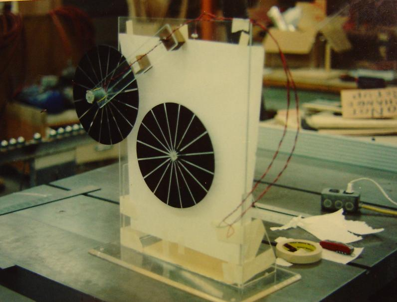
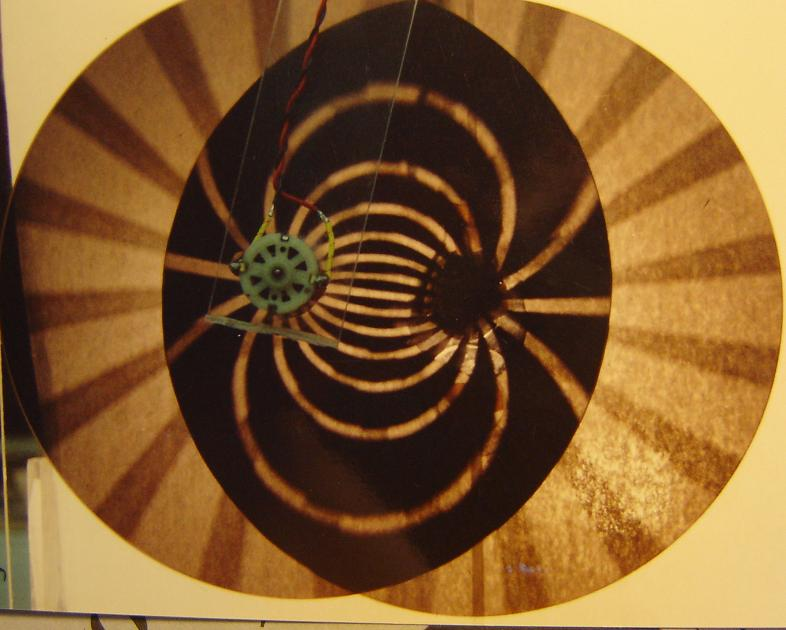
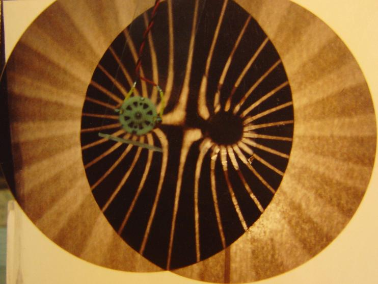

|
OTHER MACHINES |
TOP |
SEARCH |
GOOD STUFF |
NEW STUFF |
FARADIC REVOLUTION
See photos below ARTIST NAME:
William J. Beaty
TYPE:
Kinetic sculpture; hand-cranked hyperbola/circle shutter-slot device
DIMENSIONS:
Wall-mounted, somewhat flat, attaches to a wall at the top,
approx 5ft vertical, 5 ft wide, 8in thick, power supplies inside.
MATERIALS:
Motorized disk w/slip-ring assembly, wood enclosure, Acrylic sheets,
tesla coils, green gas-discharge tubes, DC power supply
INTERACTION:
The disks spin fast, but the glowing lines move only slowly.
One black 4-ft disk rotates continuously via a motor hub. This disk has
numerous long narrow CCFL tubes mounted on its surface and forming
radial glowing lines. For safety the motorized disk is behind an
acrylic window. A second 4-ft disk is mounted in front of the first one
upon horizontal rails. The second disk is opaque black with transparent
radial lines, and can be spun by the gallery visitor as well as slid
from side to side. (See diagram below.) Depending on which way they
spin, the two disks create a dynamically moving pattern of curved "field
lines" around two attracting or repelling poles. If both disks spin at
the same rate, this pattern's motion halts.
GALLERY REQUIREMENTS:
As with a painting, it's wall mounted at approximately waist height. It
requires a 120Vac outlet of only a couple of amps. The fluorescent tubes
peek out through the moving slots, so the dynamic glow effects will be
not be visible in a brightly lit gallery. They won't need an entirely
dark room, but also it cannot be placed next to white walls with intense
floodlights.
STATEMENT:
This work touches on the interaction of discovery and ridicule, the
mutual annihilation of creativity with scoffing, and it symbolizes a
major branch point in our space-time world-line. For his proposing that
invisible electric and magnetic fields exist, Michael Faraday drew scorn
and derision at the hands of the scientific community of the time. And
then he died. Yet his idea escaped suppression by hostile disbelief.
Very fortunately James Clerk Maxwell wrote an extensive report which
convinced the rest of the world to take Faraday's bizarre idea seriously.
This soon led to electrical engineering, radio, and Einstein's
relativity. Yet by such a narrow margin Faraday's idea could have been
easily lost; that road not taken. Consider how many other ideas as
important as Faraday's *were* lost; were never supported, and were
swallowed and cancelled out by active forces of anti-creativity,
leaving no trace.
CONTACT:
William Beaty
University of Washington
Bagley Hall #74
PO Box 351700
Seattle, WA 98195-1700
425-222-5066 h
206-543-6195 w
beaty@chem.washington.edu
|


|

DIAGRAM: gallery wall mount

CRUDE PROTOTYPE: 1-ft motorized disks with backlight

DISKS ROTATING TOGETHER. If the centers of the disks are
moved together and overlap, the glowing lines collapse to a point
and vanish. Note that in the finished piece, opaque sheets will
surround each disk, leaving only a black background with bright glowing lines.

DISKS ROTATING OPPOSITE. The disks move fast, but the glowing lines
move slow, and whenever the disks spin at the same speed, the glowing
lines stop moving entirely. If the centers of the disks overlap, then
the number of glowing lines is doubled, and a single radial pattern
is created.
- Brief article w/photo, Seattle PI, Dec 20 2007
Created and maintained by Bill Beaty. Mail me at: